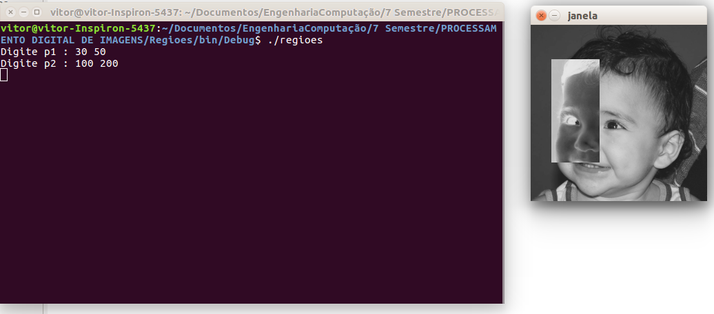
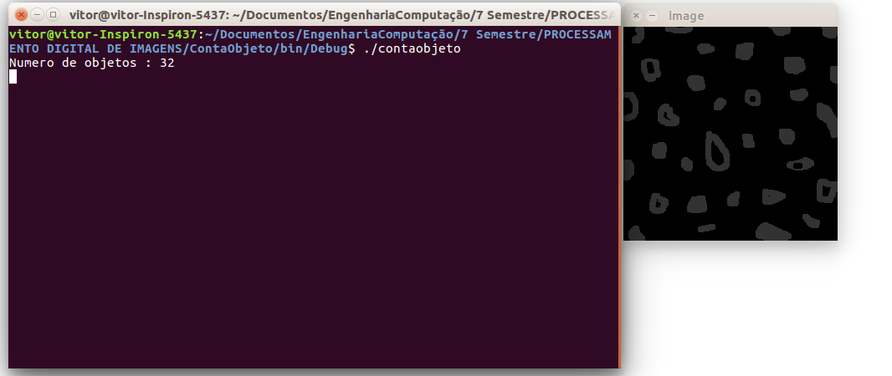
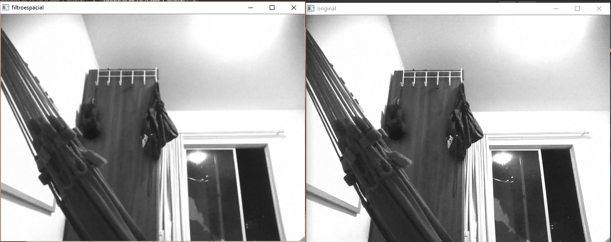
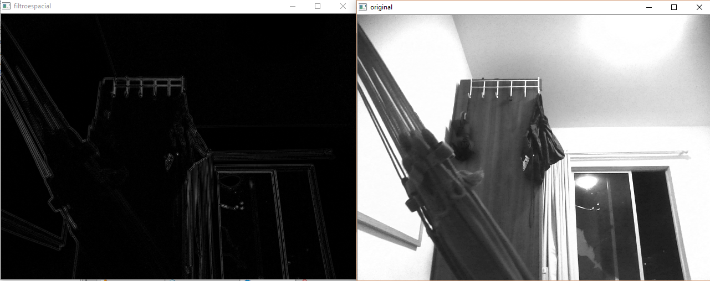

Vitor Ramos <vitorramos89@gmail.com>
Manipulando pixels em uma imagem
Exercício 1
Implementar de um programa que deverá solicitar ao usuário as coordenadas de dois pontos \$P_1\$ e \$P_2\$ localizados dentro dos limites do tamanho da imagem que lhe for fornecida e exibir. Entretanto, a região definida pelo retângulo de vértices opostos definidos pelos pontos \$P_1\$ e \$P_2\$ será exibida com o negativo da imagem na região correspondente.
#include <iostream>
#include <cv.h>
#include <highgui.h>
using namespace cv;
using namespace std;
int main(int, char**)
{
Mat image;
Vec3b val;
image= imread("biel.png",CV_LOAD_IMAGE_GRAYSCALE); // carrega a imagem biel.png
if(!image.data)
cout << "nao abriu biel.png" << endl;
namedWindow("janela",WINDOW_AUTOSIZE);
Point p1, p2;
do
{
cout << "Digite p1 : ";
cin >> p1.x >> p1.y;
cout << "Digite p2 : ";
cin >> p2.x >> p2.y;
}while(p1.x > image.size().width || p2.x > image.size().width ||
p2.y > image.size().height || p2.y > image.size().height ||
p1.x > p2.x || p1.y > p2.y || p1.x < 0 || p1.y < 0 || p2.x < 0 || p2.y < 0);
// fica no while enquato os pontos nao sao validos
for(int i=p1.x; i<p2.x; i++)
for(int j=p1.y; j<p2.y; j++)
image.at<uchar>(j, i)= 255-image.at<uchar>(j, i);//inverte o valor do pixel dentro da regiao
imshow("janela", image);
imwrite("biel2.png", image); // salva a imagem
waitKey();
return 0;
}

Exercício 2
Implementar um programa que deverar trocar aleatoriamente regiões da imagem, formando uma espécie de quebra-cabeças. Explore o uso da classe Mat e seus construtores para criar as regiões que serão trocadas. O efeito é ilustrado na Figura Troca de regiões.
#include <iostream>
#include <cv.h>
#include <highgui.h>
#include <time.h>
#include <stdlib.h>
using namespace cv;
using namespace std;
int main(int, char**)
{
srand(time(NULL));
Mat image;
Vec3b val;
int n; // raiz do numero de regioes
image= imread("abc.jpg",CV_LOAD_IMAGE_COLOR);
if(!image.data)
cout << "nao abriu abc.jpg" << endl;
namedWindow("janela",WINDOW_AUTOSIZE);
cout << "Digite o Numero de Regioes : ";
cin >> n; // numero de divisoes em uma linha
int wr= image.size().width/n, hr= image.size().height/n;
for(int i=0; i<n; i++)
{
for(int j=0; j<n; j++)
{
// A ideia e pegar cada regiao e trocar com uma regiao aleatoria na imagem
int rx= rand()%n, ry= rand()%n; // duas posicoes aleatorias de regioes
Mat randpos= image(Rect(wr*rx,hr*ry,wr,hr)); // a regiao escolhida aleatoriamente
Mat aux= image(Rect(wr*i,hr*j,wr, hr)).clone(); // a regiao atual
randpos.copyTo(image(Rect(wr*i,hr*j,wr, hr))); // copia a regiao aleatoria na regiao atual
aux.copyTo(image(Rect(wr*rx,hr*ry,wr,hr))); // copia a regial atual na regiao aleatoria
}
}
imshow("janela", image);
imwrite("abc2.jpg", image);
waitKey();
return 0;
}
Preenchendo regiões
Exercício 1
Observando-se o programa labeling.cpp como exemplo, é possível verificar que caso existam mais de 255 objetos na cena, o processo de rotulação poderá ficar comprometido. Identifique a situação em que isso ocorre e proponha uma solução para este problema.
Solucao : Isso ocorre porque para cada objeto é atribuido um valor de cinza, se a imagem tive mais de 255 objetos o programa vai atribuir valores invalidos de cinza pois a imagem só possui 8 bits, a solução é fixar o valor de cinza dos objetos encontrados assim o programa podera classificar quantos objetos tiver na imagem.
#include <iostream>
#include <opencv2/opencv.hpp>
using namespace std;
using namespace cv;
int main(int argc, char** argv){
Mat image, mask;
int width, height;
int nobjects;
CvPoint p;
image = imread("abc.png",CV_LOAD_IMAGE_GRAYSCALE);
if(!image.data){
std::cout << "imagem nao carregou corretamente\n";
return(-1);
}
width=image.size().width;
height=image.size().height;
p.x=0;
p.y=0;
// busca objetos com buracos presentes
nobjects=0;
for(int i=0; i<height; i++){
for(int j=0; j<width; j++){
if(image.at<uchar>(i,j) == 255){
// achou um objeto
nobjects++;
p.x=j;
p.y=i;
floodFill(image,p,50);
// foi trocado floodFill(image,p,nobjects);
}
}
}
cout << "Numero de objetos : "<< nobjects << endl;
imshow("image", image);
imwrite("labeling.png", image);
waitKey();
return 0;
}

Exercício 2
Aprimoração do algoritmo de contagem apresentado para identificar regiões com ou sem buracos internos. Assumindo que objetos com mais de um buraco podem existir. Incluindo suporte no seu algoritmo para não contar bolhas que tocam as bordas da imagem.
#include <iostream>
#include <opencv2/opencv.hpp>
using namespace std;
using namespace cv;
int main(int argc, char** argv)
{
Mat image, mask;
int width, height;
int nobjects, nobjectshole;
CvPoint p;
image = imread("abc.png",CV_LOAD_IMAGE_GRAYSCALE);
if(!image.data)
{
std::cout << "imagem nao carregou corretamente\n";
return(-1);
}
width=image.size().width;
height=image.size().height;
p.x=0;
p.y=0;
imshow("Original", image);
waitKey();
// busca objetos que tocam na borda e preenchem eles com cor de fundo 0
for(int i=0; i<width; i++)
{
if(image.at<uchar>(0,i) == 255)
floodFill(image, cvPoint(i,0), 0);
if(image.at<uchar>(height-1, i) == 255)
floodFill(image, cvPoint(i, height-1), 0);
}
for(int i=0; i<height; i++)
{
if(image.at<uchar>(i,0) == 255)
floodFill(image, cvPoint(0,i), 0);
if(image.at<uchar>(i,width-1) == 255)
floodFill(image, cvPoint(width-1,i), 0);
}
// busca todos os objetos
nobjects=0;
for(int i=0; i<height; i++)
{
for(int j=0; j<width; j++)
{
if(image.at<uchar>(i,j) == 255)
{
nobjects++;
p.x=j;
p.y=i;
floodFill(image,p,100);
}
}
}
// preenche o fundo com outra cor para encontrar os buracos
floodFill(image,cvPoint(0,0),10);
// acha objetos com buracos
nobjectshole=0;
for(int i=0; i<height; i++)
{
for(int j=0; j<width; j++)
{
if(image.at<uchar>(i,j) == 0)
{
p.x=j;
p.y=i;
floodFill(image,p, 10); // preenche o buraco
// evita contar objeto com mais de um buraco
if(image.at<uchar>(i, j-1) == 100)
{
nobjectshole++;
// preenche objeto com buraco de outra cor
floodFill(image,cvPoint(p.x-1,p.y), 70);
}
}
}
}
cout << "Numero de objetos : " << nobjects << endl
<< "Numero de objetos com buraco : "<< nobjectshole << endl
<< "Numero de objetos sem buraco : " << nobjects-nobjectshole << endl;
imshow("final", image);
imwrite("labeling.png", image);
waitKey();
return 0;
}Para testar o codigo foram criados objetos com mais de um buraco e o programa contou ele apenas uma vez como esperado
Manipulação de histogramas
Exercício 1
Utilizando o programa exemplos/histogram.cpp como referência. Implemente um programa equalize.cpp. Este deverá, para cada imagem capturada, realizar a equalização do histogram antes de exibir a imagem.
o programa a seguir equaliza os 3 canais de cores RGB individualmente
#include <iostream>
#include <opencv2/opencv.hpp>
using namespace cv;
using namespace std;
void MostraHist(Mat &image, bool equaliza= false)
{
vector<Mat> planes;
Mat histR, histG, histB;
int nbins = 256;
float range[] = {0, 256};
const float *histrange = { range };
bool uniform = true;
bool acummulate = false;
int histw = nbins, histh = nbins/2;
Mat histImgR(histh, histw, CV_8UC3, Scalar(0,0,0));
Mat histImgG(histh, histw, CV_8UC3, Scalar(0,0,0));
Mat histImgB(histh, histw, CV_8UC3, Scalar(0,0,0));
split (image, planes);
if(equaliza) // equaliza os 3 planos R G B
{
equalizeHist(planes[0], planes[0]);
equalizeHist(planes[1], planes[1]);
equalizeHist(planes[2], planes[2]);
}
merge(planes, image); // junta os planos novamente na imagem
calcHist(&planes[0], 1, 0, Mat(), histR, 1,
&nbins, &histrange,
uniform, acummulate);
calcHist(&planes[1], 1, 0, Mat(), histG, 1,
&nbins, &histrange,
uniform, acummulate);
calcHist(&planes[2], 1, 0, Mat(), histB, 1,
&nbins, &histrange,
uniform, acummulate);
normalize(histR, histR, 0, histImgR.rows, NORM_MINMAX, -1, Mat());
normalize(histG, histG, 0, histImgR.rows, NORM_MINMAX, -1, Mat());
normalize(histB, histB, 0, histImgR.rows, NORM_MINMAX, -1, Mat());
histImgR.setTo(Scalar(0));
histImgG.setTo(Scalar(0));
histImgB.setTo(Scalar(0));
for(int i=0; i<nbins; i++)
{
line(histImgR, Point(i, histh),
Point(i, histh-cvRound(histR.at<float>(i))),
Scalar(0, 0, 255), 1, 8, 0);
line(histImgG, Point(i, histh),
Point(i, histh-cvRound(histG.at<float>(i))),
Scalar(0, 255, 0), 1, 8, 0);
line(histImgB, Point(i, histh),
Point(i, histh-cvRound(histB.at<float>(i))),
Scalar(255, 0, 0), 1, 8, 0);
}
histImgR.copyTo(image(Rect(0, 0,nbins, histh)));
histImgG.copyTo(image(Rect(0, histh,nbins, histh)));
histImgB.copyTo(image(Rect(0, 2*histh,nbins, histh)));
}
int main(int argc, char** argv)
{
Mat image;
int width, height;
VideoCapture cap;
cap.open(0);
if(!cap.isOpened())
{
cout << "cameras indisponiveis";
return -1;
}
width = cap.get(CV_CAP_PROP_FRAME_WIDTH);
height = cap.get(CV_CAP_PROP_FRAME_HEIGHT);
cout << "largura = " << width << endl;
cout << "altura = " << height << endl;
while(1)
{
cap >> image;
resize(image, image, Size(640,480));
MostraHist(image);
imshow("Original", image);
MostraHist(image, 1);
imshow("image", image);
if(waitKey(30) >= 0) break;
}
return 0;
}

é possivel obervar a homogeneização do histograma e as cores mais vivas
Exercício 2
Utilizando o programa exemplos/histogram.cpp como referência, implemente um programa motiondetector.cpp. Este deverá continuamente calcular o histograma da imagem (apenas uma componente de cor é suficiente) e compará-lo com o último histograma calculado. Quando a diferença entre estes ultrapassar um limiar pré-estabelecido, ative um alarme. Utilize uma função de comparação que julgar conveniente.
O programa utiliza apenas o canal R para calcular a diferença do histograma, e a diferença e calculada pela função chi-quadrado \$\sum_{k=1}^{\n} (histR[k]-prevHistR[k])^2/(histR[k])\$
#include <iostream>
#include <opencv2/opencv.hpp>
using namespace cv;
using namespace std;
int main(int argc, char** argv)
{
Mat image;
int width, height;
VideoCapture cap;
vector<Mat> planes;
Mat histR;
int nbins = 256;
float range[] = {0, 256};
const float *histrange = { range };
bool uniform = true;
bool acummulate = false;
bool movimento= false;
cap.open(0);
if(!cap.isOpened())
{
cout << "cameras indisponiveis";
return -1;
}
width = cap.get(CV_CAP_PROP_FRAME_WIDTH);
height = cap.get(CV_CAP_PROP_FRAME_HEIGHT);
cout << "largura = " << width << endl;
cout << "altura = " << height << endl;
int histw = nbins, histh = nbins/2;
Mat histImgR(histh, histw, CV_8UC3, Scalar(0,0,0));
vector<Mat> prevHist; // histogramas anteriores
prevHist.resize(1);
double contFrame= 0;
while(1)
{
cap >> image;
resize(image, image, Size(640,480));
split (image, planes);
calcHist(&planes[0], 1, 0, Mat(), histR, 1,
&nbins, &histrange,
uniform, acummulate);
normalize(histR, histR, 0, histImgR.rows, NORM_MINMAX, -1, Mat());
histImgR.setTo(Scalar(0));
for(int i=0; i<nbins; i++)
{
line(histImgR, Point(i, histh),
Point(i, histh-cvRound(histR.at<float>(i))),
Scalar(0, 0, 255), 1, 8, 0);
}
histImgR.copyTo(image(Rect(0, 0,nbins, histh)));
if(prevHist[0].data) // verifica se ja existe histograma anterior
{
movimento= false; // movimento inicialmente falso
// verifica se existe uma diferenca muito grande
if(compareHist(histR, prevHist[0], CV_COMP_CHISQR)>100)
movimento= true;
}
if(movimento) // se tiver movimento escreve na tela
{
putText(image, "Movimento Detectado.", cvPoint(1,150),
FONT_HERSHEY_COMPLEX_SMALL, 0.8, cvScalar(0,0,250), 1, CV_AA);
}
if(contFrame>15) // atualiza histograma de comparacao a cada 15 frames
{
contFrame= 0;
prevHist[0]= histR.clone(); // copia o histograma
}
contFrame++;
imshow("image", image);
if(waitKey(30) >= 0) break;
}
return 0;
}
Filtragem no domínio espacial
Exercício 1
Utilizando o programa exemplos/filtroespacial.cpp como referência, Implementar um programa laplgauss.cpp. O programa deverá acrescentar mais uma funcionalidade ao exemplo fornecido, permitindo que seja calculado o laplaciano do gaussiano das imagens capturadas.
#include <iostream>
#include <opencv2/opencv.hpp>
using namespace cv;
using namespace std;
void printmask(Mat &m)
{
for(int i=0; i<m.size().height; i++)
{
for(int j=0; j<m.size().width; j++)
{
cout << m.at<float>(i,j) << ",";
}
cout << endl;
}
}
void menu()
{
cout << "\npressione a tecla para ativar o filtro: \n"
"a - calcular modulo\n"
"m - media\n"
"g - gauss\n"
"v - vertical\n"
"h - horizontal\n"
"l - laplaciano\n"
"j - laplaciano do gaussiano\n"
"esc - sair\n";
}
int main(int argvc, char** argv)
{
VideoCapture video;
float media[] = {1,1,1,
1,1,1,
1,1,1
};
float gauss[] = {1,2,1,
2,4,2,
1,2,1
};
float horizontal[]= {-1,0,1,
-2,0,2,
-1,0,1
};
float vertical[]= {-1,-2,-1,
0,0,0,
1,2,1
};
float laplacian[]= {0,-1,0,
-1,4,-1,
0,-1,0
};
Mat cap, frame, frame32f, frameFiltered;
Mat mask(3,3,CV_32F), mask1;
Mat result, result1;
double width, height, min, max;
int absolut;
char key;
video.open(0);
if(!video.isOpened())
return -1;
width=video.get(CV_CAP_PROP_FRAME_WIDTH);
height=video.get(CV_CAP_PROP_FRAME_HEIGHT);
std::cout << "largura=" << width << "\n";;
std::cout << "altura =" << height<< "\n";;
namedWindow("filtroespacial",1);
mask = Mat(3, 3, CV_32F, media);
scaleAdd(mask, 1/9.0, Mat::zeros(3,3,CV_32F), mask1);
swap(mask, mask1);
absolut=1; // calcs abs of the image
bool lapgauss= false;
menu();
for(;;)
{
video >> cap;
resize(cap, cap, Size(640, 480));
cvtColor(cap, frame, CV_BGR2GRAY);
flip(frame, frame, 1);
imshow("original", frame);
frame.convertTo(frame32f, CV_32F);
if(lapgauss)
{
Mat aux;
filter2D(frame32f, frameFiltered, frame32f.depth(), Mat(3, 3, CV_32F, gauss), Point(1,1), 0);
filter2D(frameFiltered, aux, frameFiltered.depth(), Mat(3, 3, CV_32F, laplacian), Point(1,1), 0);
if(absolut)
aux=abs(aux);
aux.convertTo(result, CV_8U);
}
else
{
filter2D(frame32f, frameFiltered, frame32f.depth(), mask, Point(1,1), 0);
if(absolut)
frameFiltered=abs(frameFiltered);
frameFiltered.convertTo(result, CV_8U);
}
imshow("filtroespacial", result);
key = (char) waitKey(10);
if( key == 27 ) break; // esc pressed!
if(key != -1) lapgauss= false;
switch(key)
{
case 'a':
menu();
absolut=!absolut;
break;
case 'm':
menu();
mask = Mat(3, 3, CV_32F, media).clone();
mask/=9;
printmask(mask);
break;
case 'g':
menu();
mask = Mat(3, 3, CV_32F, gauss).clone();
mask/=16;
printmask(mask);
break;
case 'h':
menu();
mask = Mat(3, 3, CV_32F, horizontal);
printmask(mask);
break;
case 'v':
menu();
mask = Mat(3, 3, CV_32F, vertical);
printmask(mask);
break;
case 'l':
menu();
mask = Mat(3, 3, CV_32F, laplacian);
printmask(mask);
break;
case 'j':
menu();
lapgauss= true;
break;
default:
break;
}
}
return 0;
}


foi verificado que ao utilizar o filtro gaussiano antes do laplaciano faz muito diferença pois o filtro gaussiano elimina pequenos ruidos que existem na imagem e o laplaciano consegue distinguir melhor as bordas
Bibliografia
-
http://docs.opencv.org/ - Principal portal de documentação OpenCV.
-
http://agostinhobritojr.github.io/tutoriais/pdi/. - Site de referência para as tarefas em OpenCV.